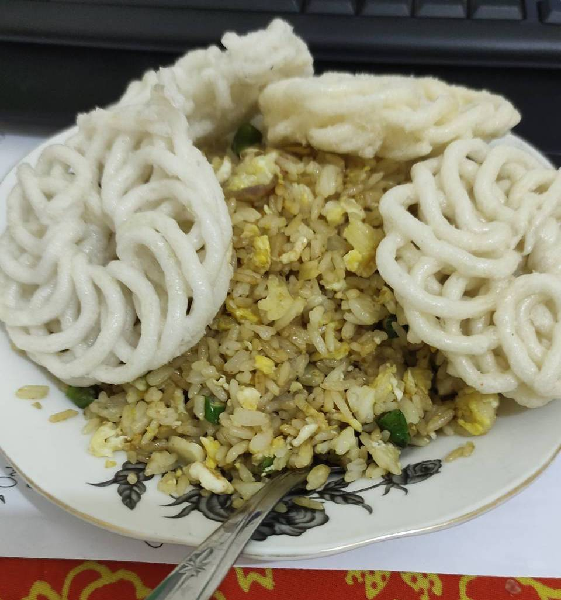

Nasi Goreng?
Nasi Goreng is Fried Rice in English. This cuisine is basically a mash-up dish when
Indonesian people have too much leftover rice and some random ingredients in their kitchen.
The dish typically consists of rice, eggs, onions, and other edible things from the fridge.
Contrary to popular beliefs, you don't need fancy Michelin Stars level ingredients to make Nasi Goreng.
Screw those mainstream websites which says you need 1000 different spices and sauces to make it.
Cooking Nasi Goreng is supposed to be so simple that even your 5 year old cousin could do it.
I am going to show you how the simple, poor-man's recipe is like. If you want expensive Nasi Goreng
with tenderloin beef cuts and olive oil, go search "How to make Nasi Goreng" and click the most American
website you can find. Else, keep reading!
Tools and Ingredients
These are the tools and ingredients you need to make Nasi Goreng.
I don't give specific measurements because in the end it's going to be relative
depending on how hungry you are at the moment.
Tools
- Knife
- Cutting Board
- Wok
- Stove
- Spatula
Ingredients
- A plate of Rice
- Eggs
- Garlic
- Onion
- Chili Peppers
- Salt
- Palm/Coconut Oil
- Any leftover edible stuff around your home
So, How Do I Cook It?
First of all, I would like to remind you that I am only going to give steps to make Nasi Goreng. I am
not going to teach cooking in general. I don't want to know whether your house burned down or not
while trying to make Nasi Goreng. By reading this, you agree that it would be your own fault if
accidents happen and I will not be legally responsible for any fire hazards in your kitchen.
Step 1: Prepare The Tools & Ingredients
Put down all ingredients, prepare all the kitchen utensils. Make sure you do have a working stove.
In case you have no stove, find online tutorials on how to start a fire (I don't mean burning your
house down, but maybe cutting wood pillars from the attic for fuel may not be a bad idea).
Step 2: Be a Ninja and Cut Some onions (plus Garlic and Chili Peppers)
90% of all people would cry during this part, and that's okay. If you are, however, the remaining
10% of people who do not cry while cutting onions, you might be a psychopath.
Step 3: Start a Fire, Not a Revolution
Turn on the stove, heat up the wok, light up your neighbor's garden and put some cooking oil
into the wok.
Step 4: When It's Too Hot, You Might Need an Air Conditioner
After the oil is hot, put your sliced onions, garlic and chili peppers. Fry for 1 minute, then
put the leftover rice and add a pinch of salt.
Step 5: Gordon Who?
After 5 minutes, crack some eggs and put it directly on top of the rice. You may also want to
add other edible items into the wok. Stir and mix them all with spatula. Show your mad cooking
skills. Do it for about 10-15 minutes.
Step 6: Bon Appetit
When you smell mild burning carbon from your wok, then it's time to pour the Nasi Goreng onto
a plate. You can add 'kerupuk' to the Nasi Goreng if you have it.
Congratulations, you didn't burn your kitchen!
